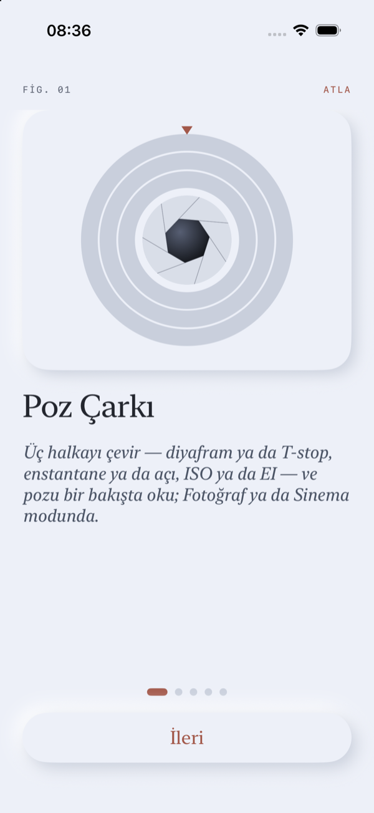
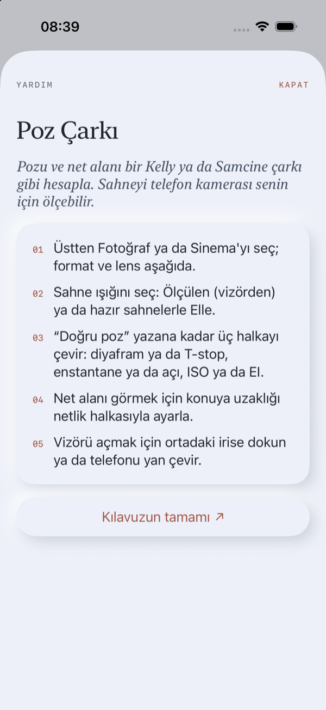
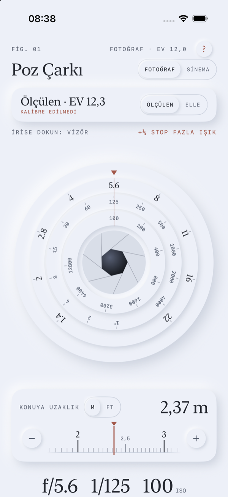
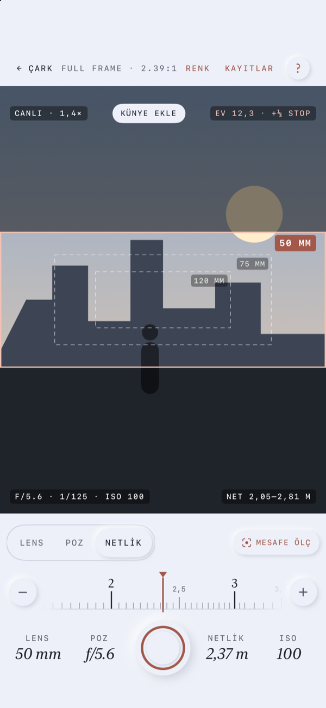
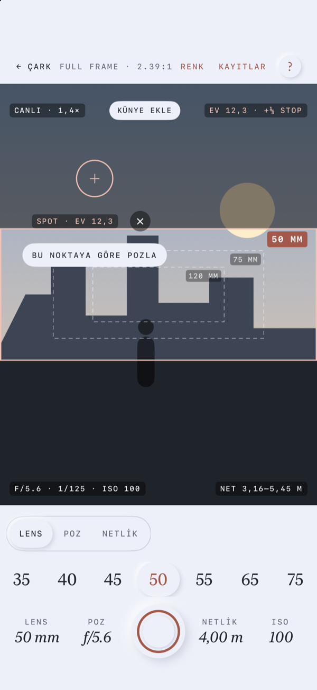
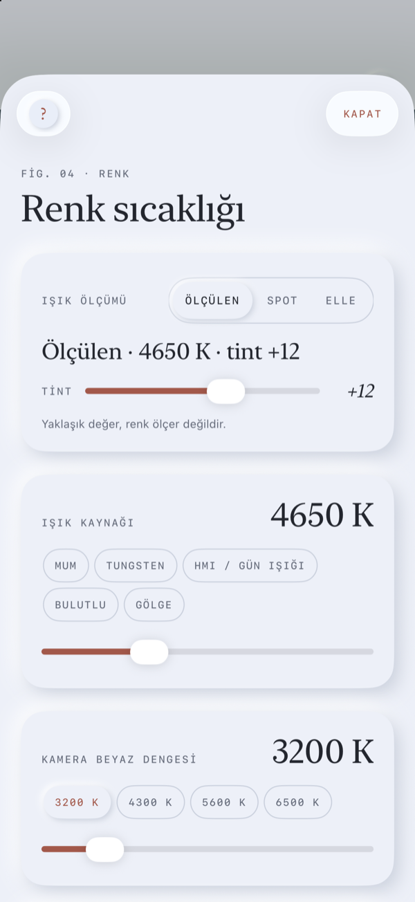
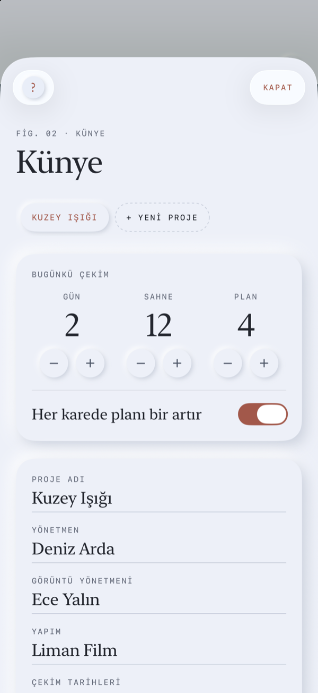
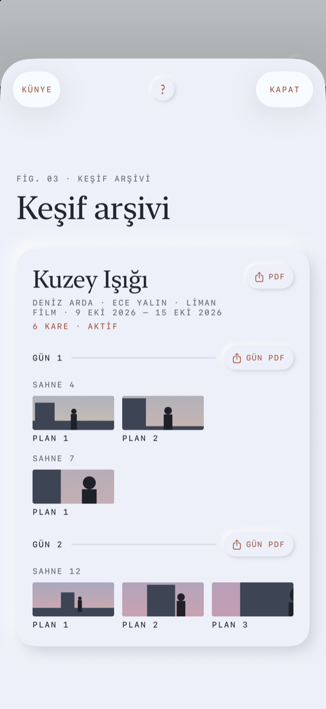
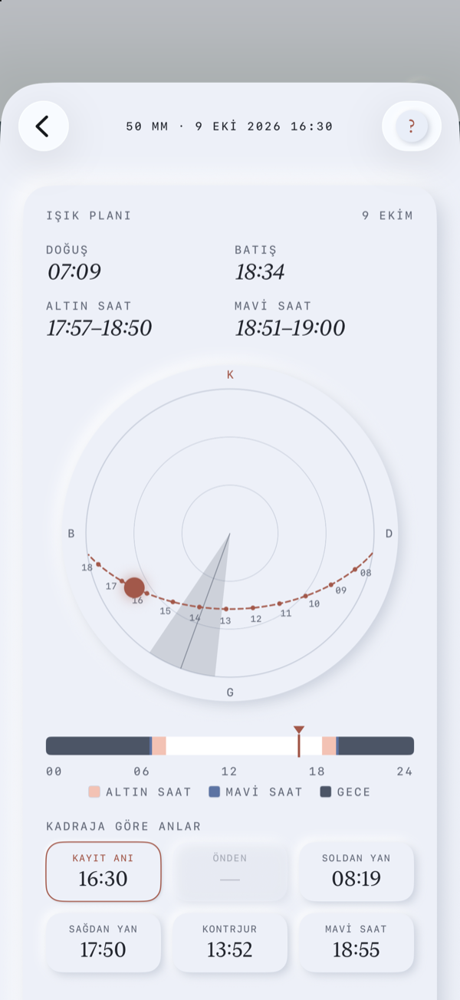

Kullanım Kılavuzu
CineBrain Pro 1.0 · PDF sürümü
1 · Başlarken
CineBrain Pro; fotoğraf ve sinema için bir poz ve net alan çarkı, lensinin kadrajını iPhone kamerasıyla gösteren bir yönetmen vizörü, bir pozometre, bir jel ve filtre hesaplayıcısı ve kaydettiğin her kare için ışık planı olan bir keşif arşividir.
İlk açılış
Beş ekranlık bir tanıtım (FIG. 01–05) ana fikirleri gösterir. İstediğin an Atla’ya basabilirsin. Tanıtımı Proje Kurulumu › Tanıtım’dan yeniden izleyebilirsin.
Her ekranda yardım
Her ana ekranın sağ üstündeki küçük ?, kısa bir açıklama, üç–beş adım ve bu sayfanın ilgili bölümüne giden Kılavuzun tamamı bağlantısını açar.
İzinler
- Kamera — vizör, ölçüm ve kare kaydetme.
- Konum, uygulamayı kullanırken — güneşin konumu ve ışık saatleri. İsteğe bağlı.
- Fotoğraflar, yalnızca ekleme — kareleri fotoğraf kitaplığına kaydetme.
- Mikrofon ve Konuşma Tanıma — bir notun mikrofonunu ilk kez basılı tuttuğunda sorulur; yalnızca sesli notlar için, iPhone’unda tanınır. İsteğe bağlı.
LiDAR, pusula ve hareket sensörleri izin gerektirmez. Hiçbir veri iPhone’undan çıkmaz; bkz. gizlilik politikası.
Dil ve birimler
Uygulama iPhone’unun dilini (Türkçe ya da İngilizce) kullanır; yalnızca bu uygulama için farklı bir dil seçmek istersen Ayarlar › CineBrain Pro › Dil. Mesafeler bölgene göre metre ya da feet’tir; konuya uzaklık kartından ya da Proje Kurulumu’ndan değiştirebilirsin.


2 · Poz Çarkı

Fotoğraf ya da Sinema
Başlığın yanındaki seçici çarkı değiştirir. Uygulama ilk açılışta Sinema’da, sonra en son kullandığın modda açılır; her mod kendi formatını, kare hızını, filtrelerini, enstantanesini ve ISO’sunu hatırlar. Fotoğraf: diyafram, enstantane (1 sn ile 1/4000) ve ISO. Sinema: T-stop, kare hızıyla birlikte shutter açısı (360° ile 11,25°) ve EI. Mod değişince enstantane ve duyarlılık mantıklı varsayılanlara döner (1/125 · ISO 100 ya da 180° · EI 800 ve ND 0.9) ve diyafram sahneye göre ayarlanır.
Sahne ışığı
- Ölçülen — vizör açıkken iPhone kamerasının ölçtüğü değer. Vizörü kapatınca çark son ölçümü korur.
- Elle — Güneşli (EV 15), Bulutlu (12), İç mekân (8) ya da Gece (5).
- Spot, vizörde “Bu noktaya göre pozla”yı kullandıktan sonra görünür.
Küçük kalibre edilmedi notu pozometre düzeltmesini açar (bkz. Proje Kurulumu). Kartın altında, ayarların doğru pozdan kaç stop uzak olduğu üçte bir stop hassasiyetle yazar.
Halkalar
Halkaları parmağınla döndür: dış — diyafram ya da T-stop (1.4 ile 22); orta — enstantane ya da açı; iç — ISO ya da EI (100 ile 12800). Her adımda hafif bir tık hissedilir. Vizörü açmak için ortadaki irise dokun ya da telefonu yan çevir. Sağ üstteki EV, filtreler dahil mevcut ayarların EV’sidir.
Çarkın altında
- Filtreler satırı (filtre takılıysa) ve konuya uzaklık kartı — bkz. Netlik.
- Büyük yazıyla diyafram, enstantane ve ISO; ardından alan derinliği kartı: yakın ve uzak sınırlar, hiperfokal mesafe, sensör ölçüsü, kırpma oranı, karışıklık dairesi (CoC) ve lensin o anki netlik mesafesindeki yaklaşık yatay görüş açısı.
- Renk sıcaklığı kartı Renk ekranını açar.
- Format — Fotoğraf: Micro 4/3, APS-C, Full frame, Orta format. Sinema: Super 16, Super 35, Large format, 65 mm. Kare hızı (Sinema): 24 ile 120.
- Filtreler — + Filtre ekle ile: ND 0.3–2.1, polarize (≈1⅔ stop), 85 ve 85B (⅔), 80A (2), 81A (⅓), difüzyon ⅛–1 (ışık kaybı yok) ya da stop olarak girilen özel bir kayıp. Çıkarmak için filtreye dokun. Toplam kayıp pozlamaya girer.
- Lens — 8 ile 600 mm.
- Diyaframı sahneye göre pozla, doğru poza en yakın diyaframı ya da T-stop’u seçer.
3 · Netlik ve net alan
Netlik halkası
Konuya uzaklık kartı bir lens netlik skalası gibi çalışır: cetveli bakır işaretin altında sağa sola kaydır. Skala logaritmiktir — yakın mesafeler geniş, uzaklar sık. Yavaş kaydırınca ince, hızlı kaydırınca kaba ilerler. Her adımda hafif bir titreşim, tam metre ya da feet’te belirgin bir tık olur. Cetveli kaydırmak sayfayı kaydırmaz.
- Adımlar (metre)
- 2 m’ye kadar 1 cm · 2–5 m arası 5 cm · 5–10 m arası 10 cm · 10–30 m arası 50 cm · sonra ∞.
- Adımlar (feet)
- 6′6″’e kadar 1″ · 16′6″’e kadar 2″ · 33′’e kadar 4″ · 100′’e kadar 1′6″ · sonra ∞.
− / + bulunduğun aralığın bir adımı kadar ilerler; basılı tutunca tekrarlar ve tuttukça hızlanır. Tam bir mesafe yazmak için büyük değere dokun (örneğin 2,37 m, ya da feet ve inç) ya da ∞’u seç. m / ft anahtarı birimi değiştirir.
Vizörde
Aynı mesafe vizörün Netlik sekmesinde de görünür ve iPhone kamerası yaklaşık o mesafeye netler. LiDAR’lı iPhone’larda Mesafe ölç, kadrajın ortasındaki noktayı (yaklaşık 5 m’ye kadar) ölçüp yazar. İki arka kameralı iPhone’larda bunun yerine Mesafe tahmin et çıkar; iki kameranın derinlik verisinden hesaplanır. Tek arka kameralı iPhone’larda düğme yoktur; mesafeyi elle gir. Kısacası: LiDAR’lı modellerde LiDAR; çift kameralı modellerde derinlikten yaklaşık tahmin; diğer modellerde elle giriş. Tahminler burada, vizörde ve kayıt detayında ≈ ile gösterilir. Her durumda telefon ile sensör düzlemi arasındaki fark için Proje Kurulumu’ndaki Mesafe ölçüm ofseti eklenir.
Net alan
Net alan, seçili formatın karışıklık dairesiyle hesaplanır ve 10 m altında santimetre hassasiyetle (örneğin 2,31–2,48 m) ya da feet-inç olarak gösterilir.
Halkadaki net alan işaretleri
Lens gövdesindeki alan derinliği skalası gibi, netlik halkası işaretin iki yanında iki kısa bakır çizgi gösterir: o anki lens, diyafram ya da T-stop, format ve mesafeye göre net alanın yakın ve uzak sınırı. Arası hafifçe doludur; sınırlar çizgilerin yanında küçük mono yazıyla yazar (10 m altında santimetre, ya da feet-inç). Uzak sınır sonsuza ulaşınca — hiperfokal mesafede ya da ötesinde netlediysen — uzak çizgi yerine bant okla ∞ ucuna uzanır. Bir sınır halkanın görünen kısmının dışındaysa değeri kenarda okla bekler. İşaretler logaritmik skalaya göre konumlanır ve lens, diyafram, format ya da mesafe değişince hemen güncellenir; vizörde Poz sekmesinde seçili diyaframı kullanır.

4 · Vizör

Ne görürsün
iPhone kamerası, aktif lensin seçili en-boy oranındaki çerçevesi (bakır) ve koruma çizgileri görüntüyü dolduracak kadar yakınlaşır — yatayda neredeyse kenardan kenara, dikeyde tam genişlik. iPhone ultra geniş, geniş ve tele kameraları arasında kendisi geçer. Çerçevenin dışı koyulaşır; komşu lensler odak uzaklıklarıyla kesik çizgili çerçeve olarak çizilir. Lensin telefonun gösterebileceğinden genişse ◂ Daha geniş ▸ çıkar.
Ekranın üstü
- ← Çark, format etiketi, Renk, Kayıtlar ve ?. Format etiketi sensör formatını, oranı, anamorfik sıkıştırmayı ve kaç koruma oranının açık olduğunu gösterir (örn. Super 35 · 2.39 · 2× · +2). Bakır çerçeveli, küçük oklu bir kapsülün içindedir; değiştirmek için dokun.
- Canlı · 1,4× — telefonun zoom’u (1× = ana kamera).
- Bakır sahne · plan düğmesi (proje yoksa Proje Kurulumu) — Proje Kurulumu’nu açar.
- EV · stop — sahne ışığı ve ayarların doğru pozdan farkı.
Sekmeler
- Lens — odak uzaklığını seç. Lensin listede yoksa sondaki Özel… 1–1200 mm arası her değeri, ondalıklı da (52,3 ya da 52.3) kabul eder; modun ayarlarıyla hatırlanır.
- Poz — önizlemek için bir diyafram ya da T-stop seç: görüntü, fazla ya da az pozu göstermek için aydınlanır ya da kararır. Kaydettiğin kare bu değeri kaydeder.
- Netlik — netlik halkası ve Mesafe ölç (LiDAR) ya da Mesafe tahmin et (çift kameralı iPhone’lar; tek kameralılarda yok, bkz. Netlik).
Format, en-boy oranı ve anamorfik
Vizörü bir modda ilk kez açtığında Kameran hangi formatta kayıt yapıyor? diye sorar ve o modun formatlarını sensör ölçüleriyle listeler (örn. Super 35 · 24,89 × 18,66 mm). Seninkine dokun. Her mod kendi formatını hatırladığı için Fotoğraf ve Sinema ayrı sorulur. Formatı burada, çarkta ya da Proje Kurulumu’nda bir kez seçtiğinde soru bir daha gelmez; seçmeden kaydırıp kapatırsan bir sonraki açılışta yine sorar.
Format etiketine (yatayda raydaki orana) dokununca Format ve Oran açılır:
- Format — o anki modun (Fotoğraf ya da Sinema) sensör formatı. Lens listesinde lensin üzerinde yazan mm’yi seç: uygulamanın her yerinde (vizör, çark, arşiv, PDF) lens gerçek odak uzaklığıdır, hiçbir zaman 35 mm eşdeğeri değildir; görüş açısı bundan ve formattan hesaplanır. Yakına netlendikçe kadraj biraz daralır: vizör çerçevesi, kaydedilen kare ve açı netlik mesafesine göre hesaplanır (ince lens tahmini — 50 mm’de 3 m’de yaklaşık %3, 1 m’de %10, 0,5 m’de %21 daha dar). Gerçek lenslerin odak nefesi farklı olabilir; değer yaklaşıktır.
- En-boy oranı — 1.33 (4:3), 1.66, 1.78 (16:9), 1.85, 2.00, 2.20, 2.39, 1:1, dikey sosyal medya için 4:5 ve 9:16, ya da Özel (0.01 adımla 0.50–3.00). Kadraj, sensöre sığan o oranlı en büyük alandır: sensörden geniş bir oran üstten ve alttan, dar bir oran yanlardan kırpılır. Yatay görüş açısı ve çerçeve çizgileri buna göre değişir.
- Anamorfik sıkıştırma — Sferik, 1.3×, 1.5×, 1.8× ya da 2×. Anamorfik lenste yatay açı sıkıştırma oranı kadar genişler; çerçeve ve görüş açısı açılmış (desqueeze) görüntüye göre hesaplanır, seçili oran da açılmış görüntünün oranıdır.
- Koruma — shoot & protect için en fazla iki ek oran (örn. televizyon için 16:9, sosyal medya için 9:16). Her biri sensördeki o oranlı en büyük alandır; ince kesik çizgiyle, sol üst köşesinde küçük bir etiketle çizilir.
Burada seçilen oran, sıkıştırma ve koruma çizgileri yalnızca bu oturum için geçerlidir: Proje Kurulumu kendi değerini korur (panelin üstünde yazar). Proje Kurulumu’na dön değişikliği bırakır; Proje Kurulumu’na kaydet onu yeni ayar yapar. Format, çarktaki ve Proje Kurulumu’ndaki ile aynı ayardır.
Spot ölçüm
O noktayı ölçmek için görüntünün herhangi bir yerine dokun; bir halka ve EV değeri çıkar. Bu noktaya göre pozla onu sahne ışığı yapar (kaynak Spot) ve çarkın diyaframını ona göre ayarlar. ✕ ortalama ölçüme döner.
Güneş işareti
Konum ve pusulayla, bakır bir disk güneşin görüntüdeki yerini gösterir; görüntü dışındaysa kenarda bir ok ona yönelir (üstteki ve alttaki bilgi satırlarına binmez). Güneş çerçevenin içindeyse Kontrjur yazar. İşaret kayıksa gerçek güneşi yatayda ortala ve yanındaki Hizala’ya bas; ince ayar Proje Kurulumu › Pusula düzeltmesi’nde.
Kare kaydetme
Bakır halkalı deklanşöre bas. Ekran bir an parlar ve “Kaydedildi · Sahne 12 · Plan 3” yazar. Kare aktif lensin seçili orandaki çerçevesine kırpılır ve arşive lens, format, en-boy oranı, anamorfik sıkıştırma, koruma oranları, poz, filtreler, netlik mesafesi, net alan, tarih, proje, gün, sahne ve planla — varsa konum ve pusula yönüyle — kaydedilir. Ayrıca Fotoğraflar’a eklenir; açtıysan altına bilgi şeridi basılır. “Her karede planı bir artır” açıksa plan numarası bir artar. Deklanşörün yanındaki Not düğmesi (telefon yataydayken sağ rayda) her zaman oradadır: son kaydedilen karenin notunu açar; yazabilir ya da söyleyebilirsin (bkz. Sesli not).
Deklanşörün altındaki küçük seçim (yatayda rayda) kaydedilen karenin pozunu belirler: Çekim pozu (varsayılan) vizörde gördüğün simüle edilmiş pozu korur, yani az pozlu bir ayar karanlık kaydedilir; Normal poz kaydetmeden önce telefonun bir anlığına doğru pozlamasına izin verir — kadrajı ve mekânı kaydetmek için iyidir. Hangisiyle çekildiği kayıt detayında yazar (Kayıt pozu).
Koruma oranları kaydedilen karenin üzerine ince kesik çizgi ve küçük etiketle çizilir — kayıt detayında, PDF’te ve Fotoğraflar’daki kopyada. Kareden büyük bir koruma alanının yalnızca kareye düşen çizgileri görünür (ör. 2.39 karede 9:16’nın yanları). Proje Kurulumu › Dışa aktarma’dan kapatılabilir.
Telefonu yan çevirince yatay düzen gelir: düğmeler sağdaki bir raya geçer; Netlik sekmesinde aynı alan derinliği işaretleriyle dikey bir netlik halkası (∞ yukarıda) ve − / + düğmeleri bulunur.
5 · Renk

Renk ekranını çarktaki renk sıcaklığı kartından ya da vizörden aç.
Işık ölçümü
- Ölçülen — iPhone kamerasının otomatik beyaz dengesi; vizör çalışırken canlı okunur.
- Spot — vizör “Beyaz ya da gri bir yüzeye dokun” ipucuyla açılır; o noktanın rengi ölçülüp buraya gönderilir.
- Elle — Mum 1900 K, Tungsten 3200 K, HMI / Gün ışığı 5600 K, Bulutlu 6500 K, Gölge 7500 K ya da kaydırıcı (1500–12000 K). Bir değeri elle değiştirmek kaynağı Elle yapar.
Tint kaydırıcısı (−50 ile +50) elle ayarlanabilir. Ölçüm yaklaşıktır — telefon bir renk ölçer değildir.
Kamera ve mired farkı
Kameranın beyaz dengesini ayarla (3200, 4300, 5600, 6500 K ya da kaydırıcı). Mired farkı kamera eksi ışıktır: artı, ışığın fazla mavi olduğunu (CTO ile ısıt), eksi fazla sıcak olduğunu (CTB ile soğut) gösterir.
Öneriler
- Işığa jel — Rosco ya da LEE; tek jel ya da ikili; ürün numaraları, kayma, kalan fark ve sonuçtaki renk sıcaklığı.
- Ya da objektife filtre — 85, 85B, 85C, 81A–C, 80A–C, 82A ve filtre faktörleri. Objektife tak, 85, 85B, 80A ya da 81A’yı çarkın filtrelerine ekler.
- Yeşil · magenta — tint’e göre tam, ½ ya da ¼ Plus ya da Minus Green (Rosco 3304/3315/3316 ve 3308/3313/3314; LEE 244–246 ve 247–249). Tint yaklaşık CC birimindedir.
Rosco değerleri yayımlandığı gibidir. LEE dönüşümleri yayımlar; buradaki mired kaymaları bunlardan hesaplanmıştır. Kamera filtreleri Wratten değerleridir.
6 · Keşif: kareler, künye, arşiv, PDF


Proje Kurulumu
Poz Çarkı’nın üstündeki Proje Kurulumu’ndan, vizördeki bakır sahne · plan düğmesinden ya da Kayıtlar › Proje Kurulumu’ndan aç. Burada ayarlanan her şey sen burada değiştirene kadar olduğu gibi kalır — mod değiştirmek ya da vizörde bir şey denemek onu sıfırlamaz.
- Projeler — aktif yapmak için bir projeye dokun; + Yeni proje yenisini açar. Yeni kareler aktif projeye kaydedilir.
- Bugünkü çekim — − / + ile gün, sahne ve plan sayaçları; Her karede planı bir artır.
- Künye bilgileri — proje adı, yönetmen, görüntü yönetmeni, yapım ve çekim tarihleri; arşivde ve PDF kapağında görünür.
- Projeyi sil — kareleri arşivde kalır.
Ayarlar (Proje Kurulumu’nda)
- Format — Fotoğraf ve Sinema için sensör formatı; her mod kendininkini tutar.
- Kadraj — vizör ve kaydedilen kareler için en-boy oranı, anamorfik sıkıştırma ve koruma çizgileri. Aktif bir proje varsa projeyle de kaydedilir; o proje yeniden seçilince geri gelir.
- Mesafe birimi (m ya da ft) ve Mesafe ölçüm ofseti (±100 cm; kameranın sensörü telefonun arkasındaysa artı). LiDAR ölçümlerine ve derinlik tahminlerine eklenir.
- Pozometre düzeltmesi — üçte bir adımla ±3 stop. Aynı sahneyi el pozometresiyle ve vizörle ölç, farkı gir.
- Pusula düzeltmesi — ±45°.
- Dışa aktarma — Fotoğraflar’a kaydedilen karelerin altına bilgi şeridi (proje, sahne/plan, format, en-boy oranı, anamorfik ve koruma oranları, lens, poz, net alan; sonunda CINEBRAIN PRO) ve Kaydedilen karelere koruma çizgilerini çiz (varsayılan açık); ayrıca keşif dosyası için Sayfa başına kare (1 ya da 2).
- Tanıtım — turu yeniden izle ya da bu kılavuzu aç.
Keşif arşivi
Vizördeki Kayıtlar ile açılır. Kareler projeye (aktif olan en üstte), sonra güne ve sahneye göre gruplanır; her küçük karenin altında plan numarası yazar. Bilgileri için kareye dokun; silmek için basılı tut.
Kare detayı
Kaydedilen kare, her bilgi kendi kutusunda (format ve en-boy oranı ayrı), Işık planı ve kendiliğinden kaydedilen bir not alanı.
Sesli not
Not’un yanında bir mikrofon var. Basılı tut, konuş ve bırak: söylediklerin notun sonuna eklenir. Aynı not kartı, son kaydedilen kare için vizörde deklanşörün yanındaki Not düğmesinden de açılır. Notlar uygulamanın dilinde (Türkçe ya da İngilizce) ve yalnızca iPhone’unda tanınır: ses kaydedilmez, hiçbir şey bir yere gönderilmez. İlk seferde uygulama Mikrofon ve Konuşma Tanıma izni ister; izin verdikten sonra düğmeyi yeniden basılı tut. iPhone’un uygulamanın dilini cihaz içinde tanıyamıyorsa mikrofon görünmez, notu yazarak girersin.
PDF keşif dosyası
PDF bütün proje için, Gün PDF tek bir gün için dosya hazırlar. Sonra Sayfa başına kare’yi seçip PDF hazırla’ya bas; paylaş menüsüyle istediğin yere gönderirsin. Kapakta künye bilgileri bulunur. Seçimin bir sonraki dışa aktarmada hatırlanır; Proje Kurulumu › Dışa aktarma’dan da ayarlanabilir.
- 1 · tam sayfa — büyük görüntü, tüm bilgiler, en uygun ışık saatleri ve geniş çizgili not alanı (ya da not).
- 2 · yan yana — iki kare, her biri tüm bilgileri, ışık saatleri ve not alanıyla.
7 · Işık planı

Konumla kaydedilen her karenin, o gün ve o yer için telefonda hesaplanan bir ışık planı vardır (NOAA güneş formülleri).
- Doğuş, batış, altın saat (güneş −4° ile 6° arası) ve mavi saat (−6° ile −4°); akşam saatleri gösterilir.
- Güneş kadranı — kuzey yukarıda, tepe noktası ortada, ufuk kenarda. Bakır kesik çizgi saatleriyle güneşin yoludur; gri dilim, lensin görüş açısı genişliğinde kadrajın yönüdür.
- Gün çizgisi — gece, mavi saat, altın saat ve gündüz. Bir saat seçmek için üzerinde parmağını kaydır.
- Kadraja göre anlar — Kayıt anı, Önden, Soldan yan, Sağdan yan, Kontrjur ve Mavi saat: her biri için günün en uygun saati, alçak güneş tercih edilerek. “—” o gün gerçekleşmeyeceği anlamına gelir. Birine dokununca güneş kadranda o konuma kayar.
Seçilen saat için güneşin yönü ve yüksekliği, kadraja göre yeri, tahmini ışık seviyesi (açık gökyüzü için kaba bir EV) ve önerilen ayarlar görünür: Sinemada açı, kare hızı ve EI korunur, ND (gerekirse T-stop) değişir; Fotoğrafta ISO ve filtreler korunur. Kontrjurda yüzler için yaklaşık bir stop açık pozlamayı önerir. Çarkı bu saate kur, o ışığı, lensi, formatı ve ayarları Poz Çarkı’na yükler (sahne ışığı Elle olur).
Yöne bağlı anlar için karenin pusula yönü gerekir.
8 · Sık sorulanlar ve sınırlar
İnternet gerekiyor mu?
Hayır. Güneş hesapları dahil her şey iPhone’da çalışır.
Karelerim nerede?
iPhone’undaki uygulamada ve kaydetme başarılıysa Fotoğraflar’da. Cihaz yedeklerine dahildir. Uygulamayı silmek arşivini de siler.
Pozometre ne kadar doğru?
Ölçüm iPhone kamerasının kendi pozlamasından gelir ve bir el pozometresinden biraz farklı olabilir. Bir kez karşılaştır ve farkı Pozometre düzeltmesi’ne gir.
Renk ölçümü ne kadar doğru?
Yaklaşıktır. Kritik işler için bir renk ölçer kullan. Yeşil ışıkta (floresan) Minus yerine Plus Green öneriyorsa lütfen bize yaz.
LiDAR ve tahmini mesafe
LiDAR (Pro modeller) yaklaşık 5 m’ye kadar ölçer. LiDAR’lı modellerde LiDAR; çift kameralı modellerde derinlikten yaklaşık tahmin; diğer modellerde elle giriş. Tahminler ≈ ile gösterilir:
- Derinlik — iki arka kameralı iPhone’lar iki görüntüyü karşılaştırır. Birkaç metre içindeki dokulu bir yüzeyde en iyisidir; düz duvar, cam ve karanlık sahneler zordur.
LiDAR ve derinlik ölçümü sırasında önizleme bir an duraksar. Tahmin her seferinde aynı miktarda kayıyorsa Mesafe ölçüm ofseti ile düzelt. Kayıt detayında mesafenin nasıl bulunduğu yazar (Mesafe ölçümü); elle girilen mesafe işaretlenmez.
Pusula ve güneş işareti
iPhone pusulası genelde 5–10° içindedir ve yakındaki metallerden etkilenebilir; Hizala ya da Pusula düzeltmesi’ni kullan. Güneş işareti için konum gerekir.
Vizör çerçevesi
Oranı format etiketine dokunarak seç; varsayılan 2.39:1’dir. Anamorfik lensler sıkıştırma oranı kadar geniş gördüğü için “Daha geniş” uyarısına daha erken ulaşır. Telefonun ultra geniş kamerasından geniş lensler “Daha geniş” gösterir; çok uzun lensler dijital zoom kullanır.
Işık planı olmayan kareler
Konumsuz (ya da uygulamanın konum izni olmadan) kaydedilen karelerin ışık planı yoktur; pusula yönü olmayan karelerde yöne bağlı anlar çıkmaz.
Fotoğraflar’daki kareler
Uygulama yalnızca fotoğraf ekleme izni ister ve kitaplığını hiç okumaz. Kaydedilen kareler bir albüme değil, kitaplığına eklenir; istersen Fotoğraflar’da kendin bir albüme koyabilirsin.